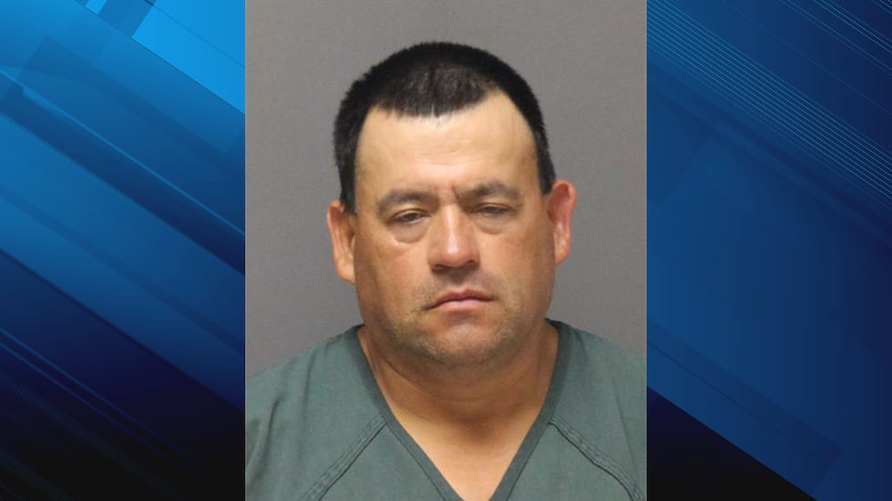

October 03, 2026
Caught by a rerun — 29-year Des Moines hit-and-run cold case cracked by an America's Most Wanted episode from 1998


Photo: Ocean County Jail (via WVLT); headline card: The Night Desk
On Sept. 29, 1997, 64-year-old Leslie Ruby — a Korean War veteran, retiree and grandfather — was struck and killed in a hit-and-run outside his Des Moines, Iowa, home. Police identified then-28-year-old Gerardo Garcia-Michel as the suspect, but he fled the state before an arrest could be made. Investigators ran the leads dry, and the case went cold.
In 1998, the popular TV show America's Most Wanted aired an episode on Ruby's case. Almost 29 years later, a rerun of that episode prompted someone to send a Crime Stoppers tip to investigators: Garcia-Michel was his neighbor.
The tip helped detectives locate Garcia-Michel in New Jersey. He was arrested by U.S. Marshals, and the Des Moines Police Department is working to extradite him to Iowa to face the charges.
"It doesn't matter if it's 29 minutes or 29 days or 29 years after a crime. Getting answers for the family is one of the most important things that we can do," Des Moines Police Sgt. Paul Parizek said.
Ruby's family spent nearly three decades without answers. One TV rerun changed that in a single evening.
This is a developing story — the Graveyard Crew will update as the extradition moves forward.
Source: WVLT (KCRG/Gray News) — read the original report
← Back to latest stories